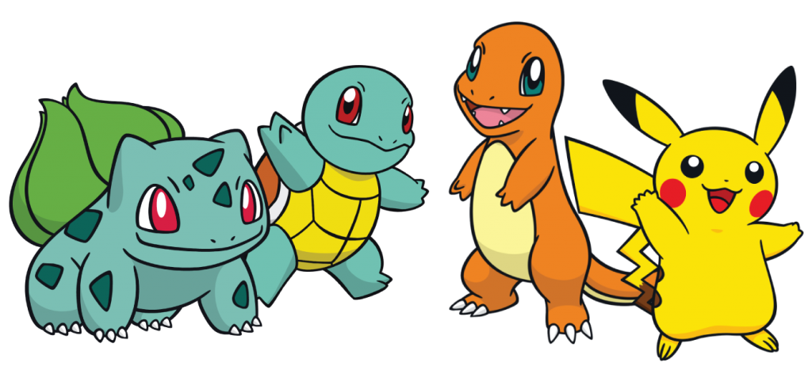

The legendary world of Pokémon first reached Australian and New
Zealand shores in 1998 with Pokémon Red Version and Pokémon Blue
Version for Game Boy, becoming an instant sensation that transcended
fans of all ages and backgrounds.
Since the 1996 debut of Pokémon Red and Pokémon Green for Game Boy in
Japan, this iconic series has sold more than 279 million video games
globally, with avid Aussie and Kiwi Pokémon fans continuing to grow
their Pokémon collections.

WHAT ARE POKEMON
Pokémon are creatures of all shapes and sizes who live in the wild or
alongside humans. For the most part, Pokémon do not speak except to
utter their names. There are currently more than 700 creatures that
inhabit the Pokémon universe.
Pokémon are raised and commanded by their owners (called “Trainers”).
During their adventures,Pokémon grow, level up and become more experienced
and even, on occasion, evolve into stronger Pokémon.
There are over a dozen different types of Pokémon, such as Fire type, Psychic
type, and Dragon type. Every Pokémon type comes with both advantages as well
as disadvantages when battling different Pokémon types.
For instance, a Fire type Pokémon has the edge against Grass type Pokémon, but
will be at a disadvantage gainst Water type Pokémon. This makes strategic thinking,
positioning and use of the Pokémon in your team a crucial part of battles.